I love providing workshops that offer opportunities to creatively explore and play, to help others thrive, and to make connections with communities. I've been teaching since 2012 and I consider it a core part of my practice!
My specialism is in screen printing but I also offer facilitation in drawing, narrative, community mural painting, pattern exploring and pulp painting. I've taught in a variety of contexts including community centres, arts organisations, schools, private parties and high street pop-ups across a range of ages and abilities. If you're curious about planning a workshop or want to know more please get-in-touch.

 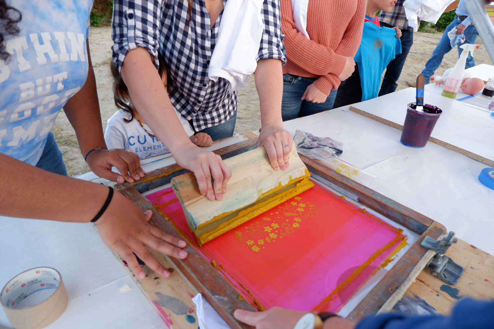
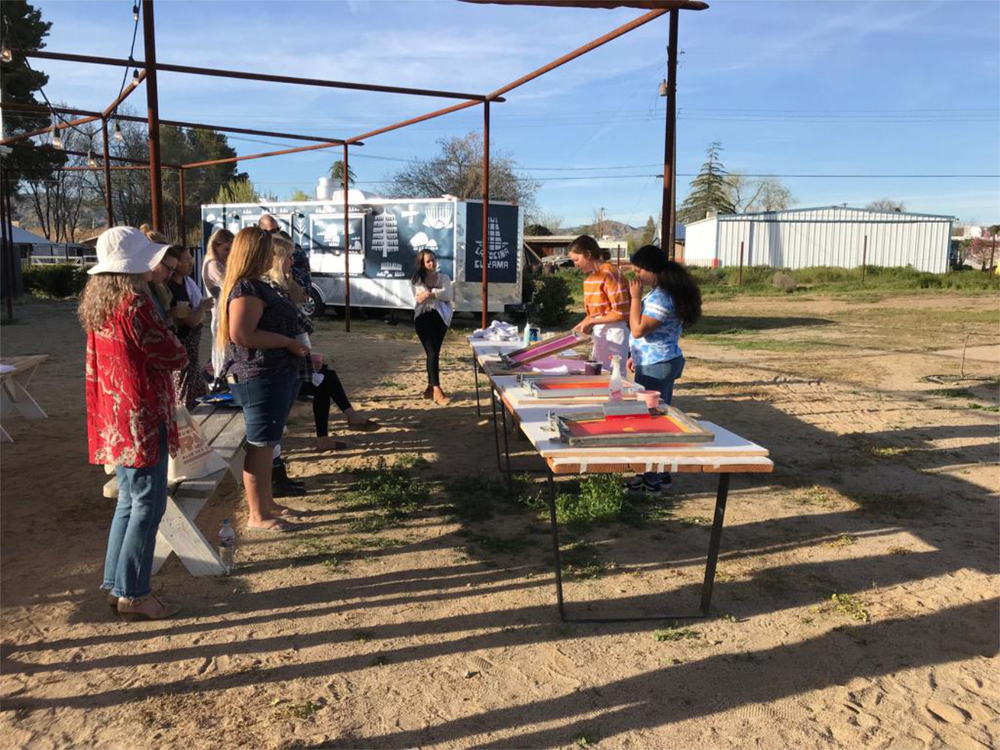
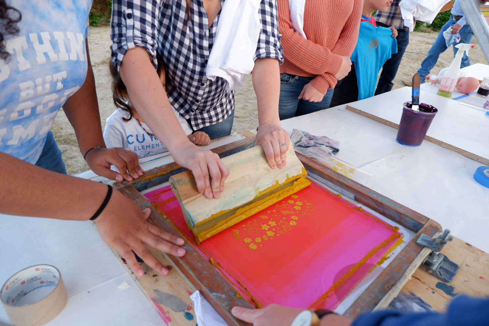
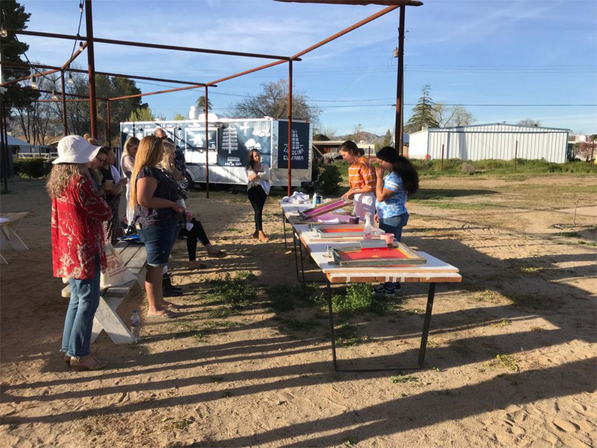


 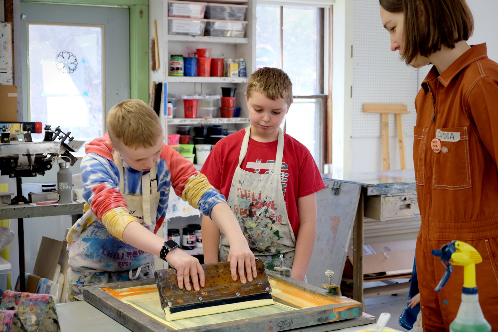
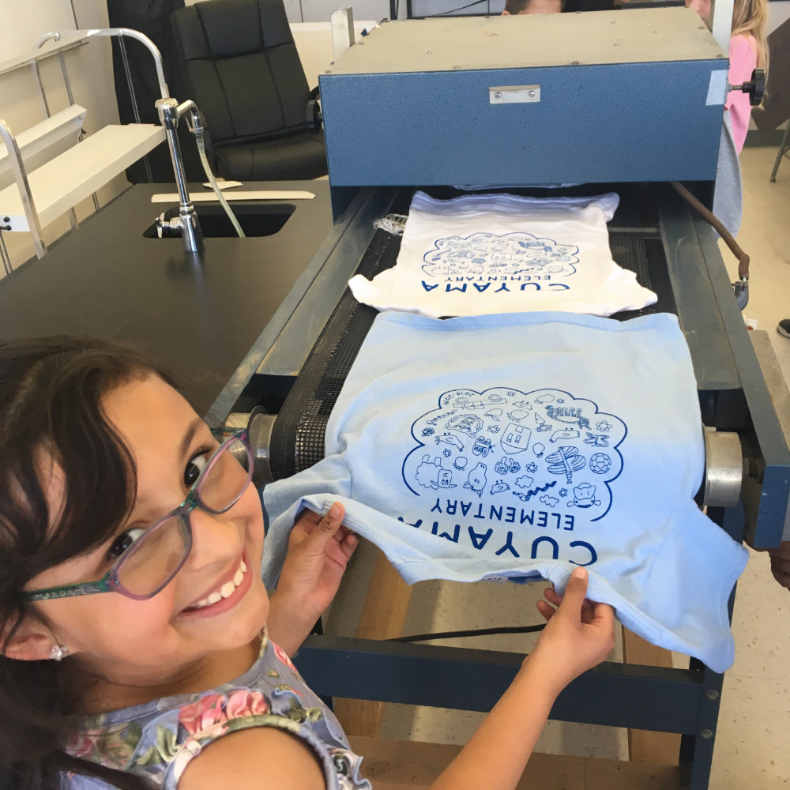
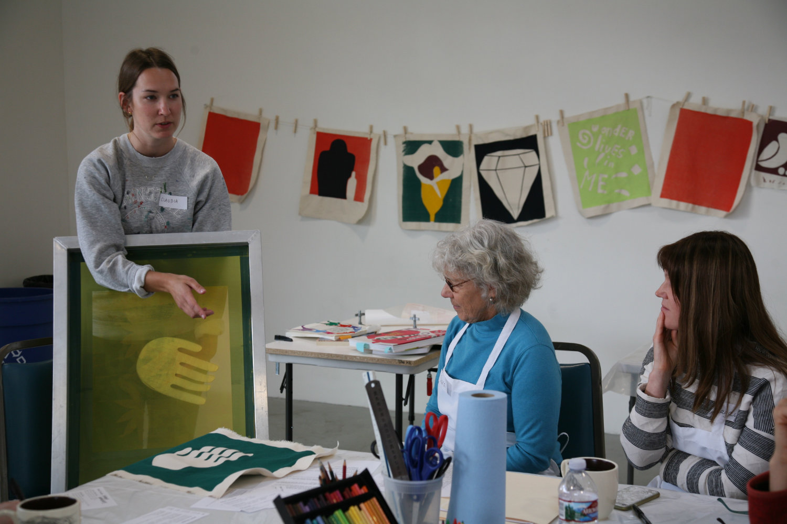
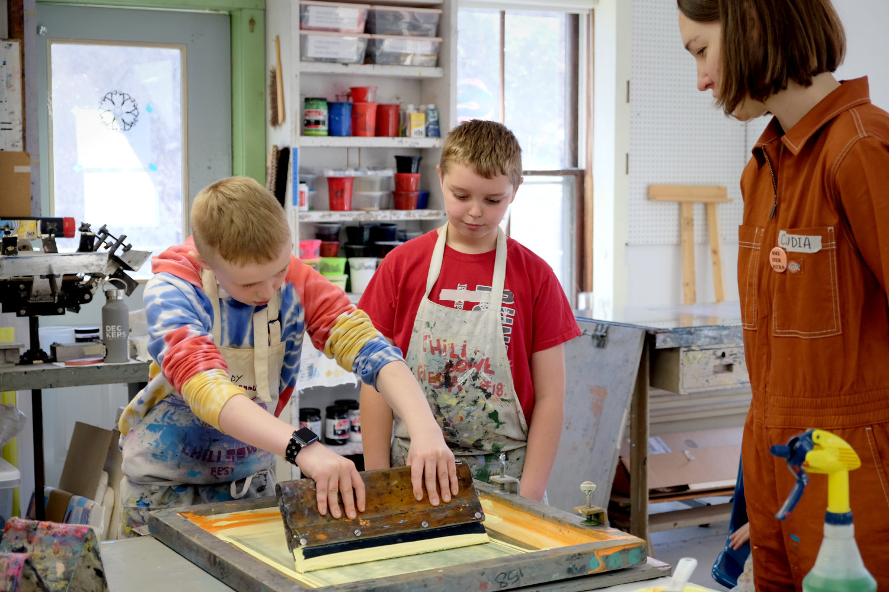
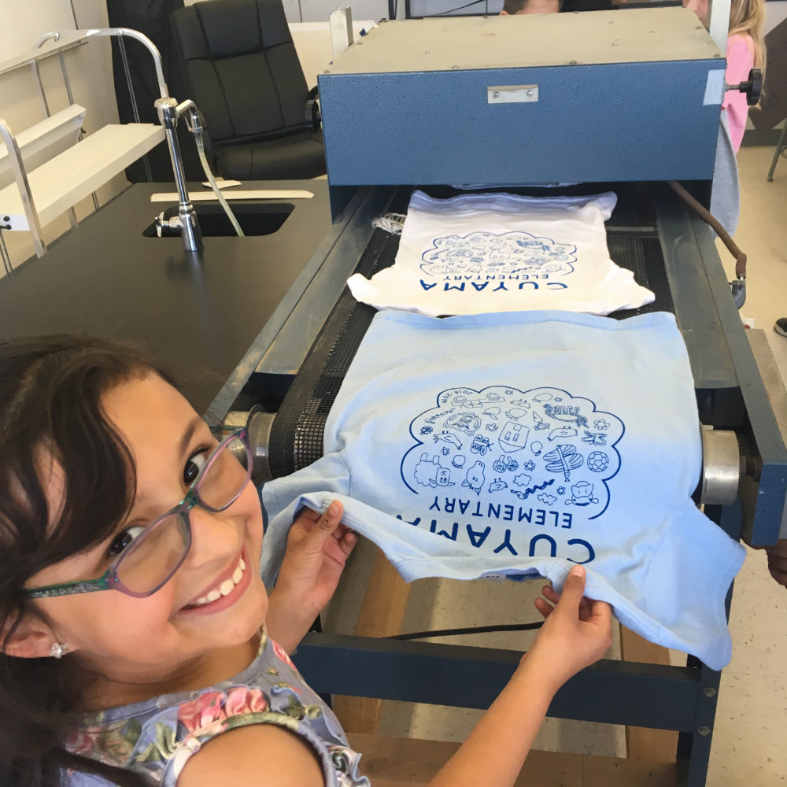
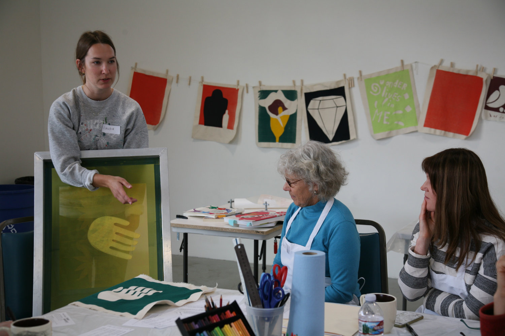
 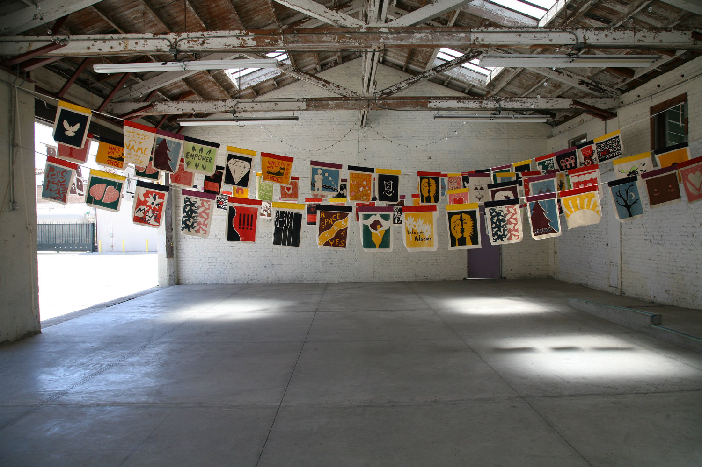
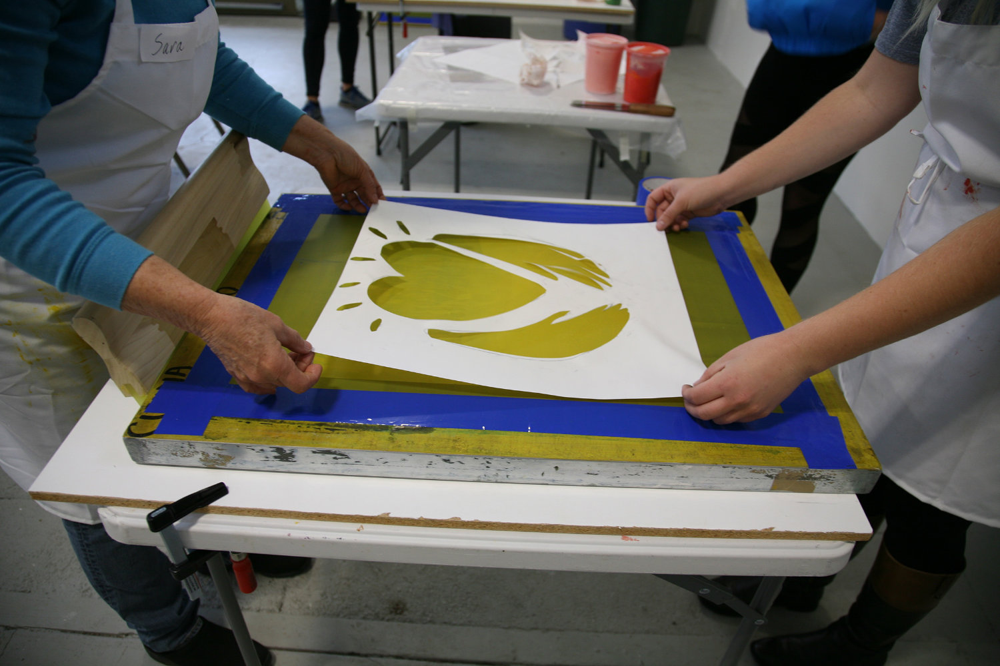
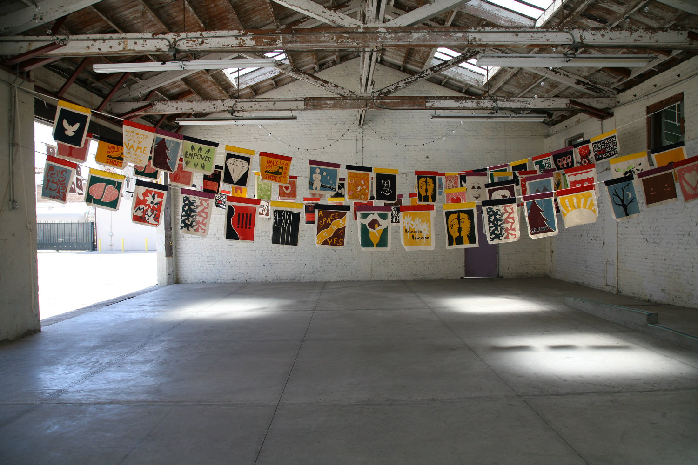
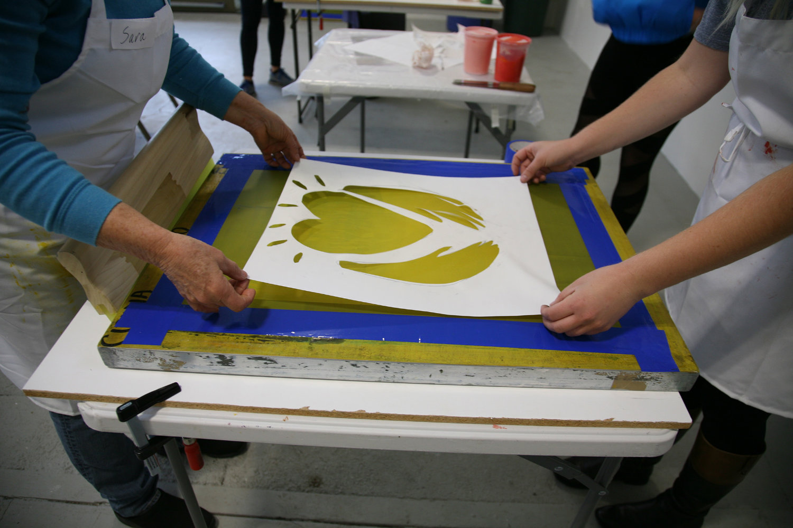